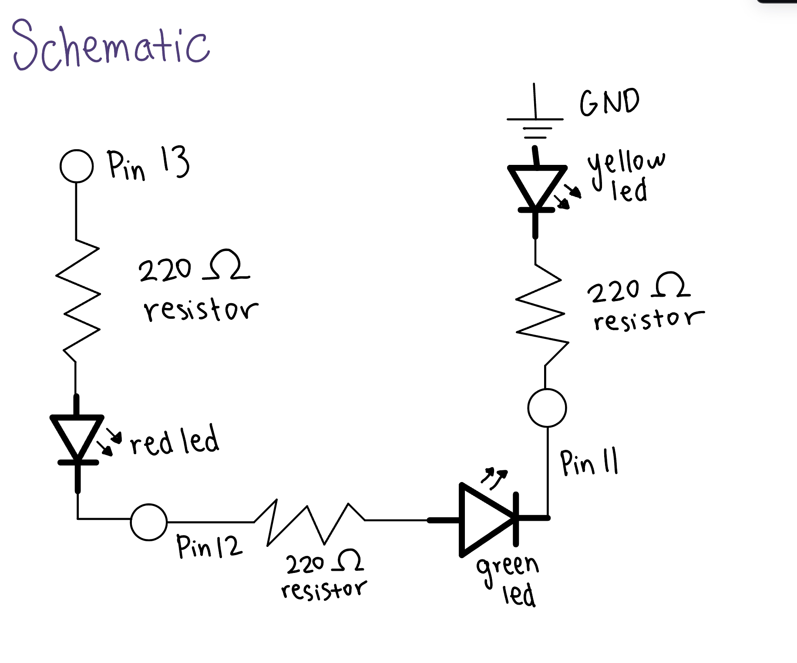
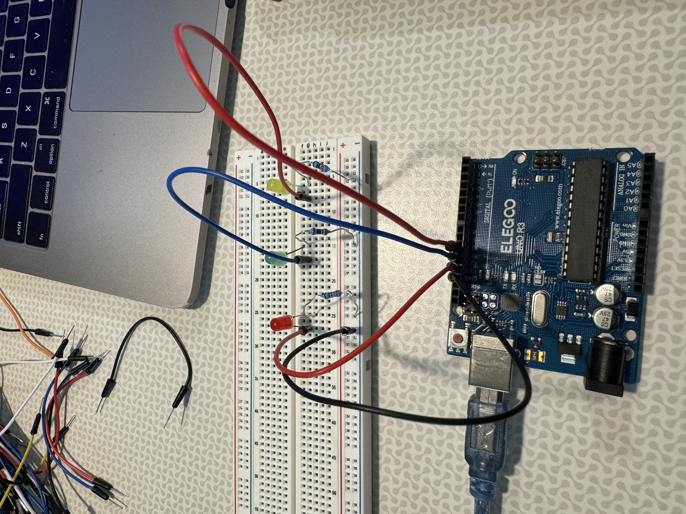
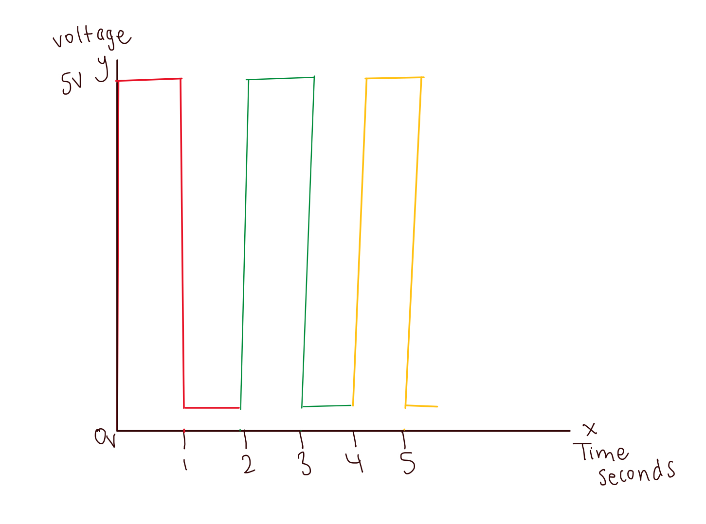

Here is all the documentation for assignment 1!
Here are sources I used: https://www.youtube.com/watch?v=FKekzzj5844 and https://www.youtube.com/watch?v=e1FVSpkw6q4
Schematic
 Resistor Calulcation: Voltage power = 5V and Voltage drop for Red, Yellow, and Green LED's = 1.8V and Current = 20mA
V = 5-1.8 = 3.2V
Ohm's Law: V = I x R
3.2 = 0.02 x R
R = 160 Ohms
Therefore, I used 220 Ohms for the resistors.
Circuit
Code Snippet
// the setup function runs once when you press reset or power the board
void setup() {
// Initialize the digital pins as an output
pinMode(12, OUTPUT);
pinMode(13, OUTPUT);
pinMode(11, OUTPUT);
}
// the loop function runs over and over again forever
void loop() {
// Turn the red LED on by making the voltage level high
digitalWrite(13, HIGH);
// Wait for a second
delay(1000);
// Turn the same LED off by making the voltage level low
digitalWrite(13, LOW);
// Wait for a second
delay(1000);
// Turn the green LED on by making the voltage level high
digitalWrite(12, HIGH);
// Wait for a second
delay(1000);
// Turn the same LED off by making the voltage level low
digitalWrite(12, LOW);
delay(1000);
// Turn the yellow LED on by making the voltage level high
digitalWrite(11, HIGH);
// Wait for a second
delay(1000);
// Turn the same LED off by making the voltage level low
digitalWrite(11, LOW);
// Wait for a second
delay(1000);
}
Circuit Operation

Questions and Answers
Draw a graph where the X axis is time and the Y axis is voltage across the LEDs. Draw a line for each of your 3 LEDs.
How many LEDs could you blink independently with your Arduino? How much current would that draw?
There could be about 20 LEDs we could blink independently with the Arduino and the current it would draw would be around 20mA each. How fast do you need to blink your LEDs until you no longer can tell that they are blinking?
Around 3 milliseconds.